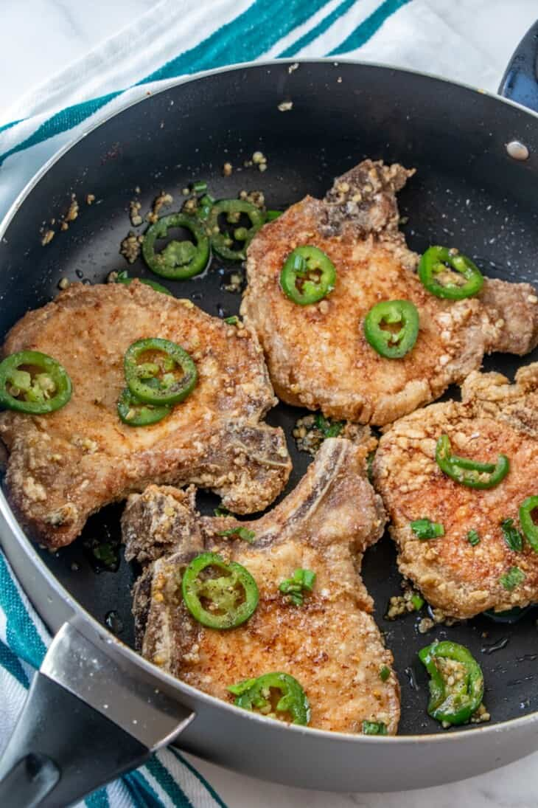

Chinese Salt and Pepper Pork Chops

Description
This recipe will help you make juicy and delicious chinese style salt and pepper
pork chops just like the ones at your favorite restaurant!
Ingredients
- 4 bone-in pork chops, about 1/2 inch thick
- 1 egg white
- 1 1/2 teaspoons salt
- 3/4 cup cornstarch
- canola oil
- 1/4 teaspoon pepper
- 1 head garlic, peeled and minced
- 2 pieces jalapeno, cut thinly
- 2 green onions, chopped
Steps
- Rinse the pork chops and pat dry. With a sharp knife, make a few small cuts
around the band of fat.
- In a large bowl, combine egg white and 1/2 teaspoon of the salt. Whisk well
until frothy.
- Add pork chops and marinate in the refrigerator for about 30 minutes.
- Add cornstarch and toss to fully coat pork chops. Let stand for about 10 minutes.
- In a large pan over medium heat, heat about 3-inches deep of oil to 350 F to
375 F. Add pork chops and deep-fry, turning as needed, for about 5 to 7 minutes
or until golden, crisp and cooked through.
- With a slotted spoon, remove pork chops from pan and drain on a wire rack set
over a baking sheet. Reserve 2 tablespoons of the frying oil.
- In a wide pan over medium heat, heat the reserved 2 tablespoons reserved oil.
- Add garlic and cook, stirring regularly, until lightly browned.
- Add jalapenos, green onions, the remaining 1 teaspoon salt and pepper. Cook, stirring
regularly, for about 30 seconds.
- Add deep-fried pork chops and toss for about 30-40 seconds or until heated through.
Serve hot.